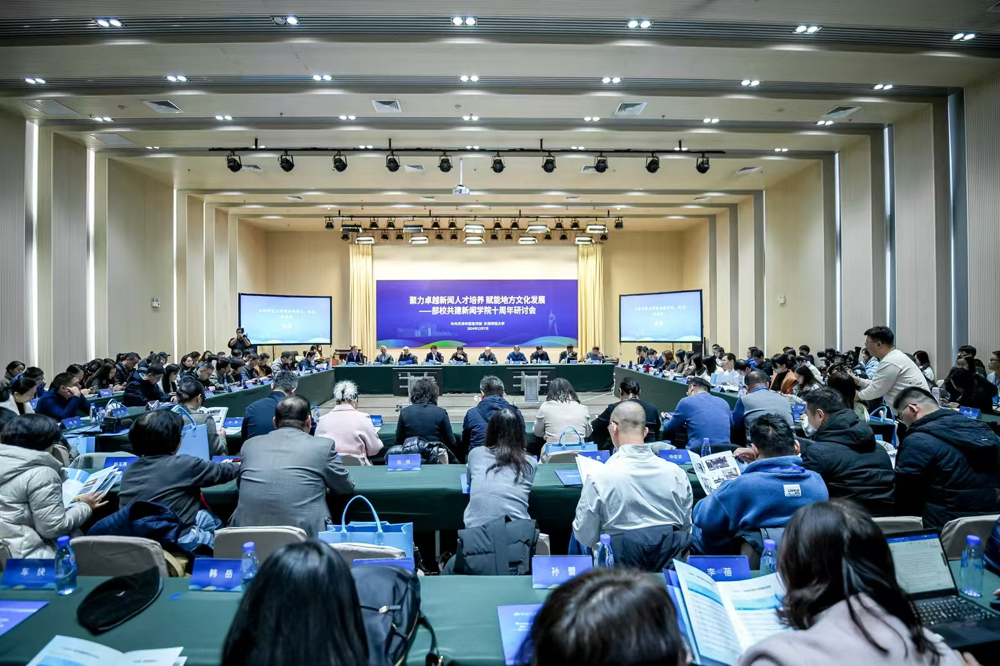

专家您好，欢迎您浏览教学成果奖材料网站！部校共建机制下卓越新闻传播人才
“四全”培养体系的探索与实践
关于“部校共建”
“部校共建”指由党委宣传部门与高等院校共同建设新闻学院的合作模式，旨在培养政治立场坚定、业务能力过硬的新闻传播人才，它也是我国高等教育领域各类“共建”模式中，极具代表性的一种。2013年中宣部、教育部联合发文，在全国选取10个省市及高校开展首批试点。天津师范大学新闻传播学院是天津市第一家“部校共建”单位。